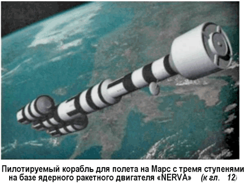
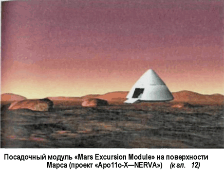
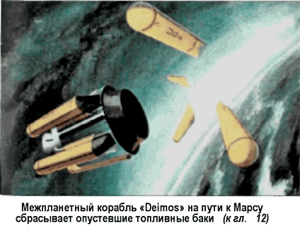
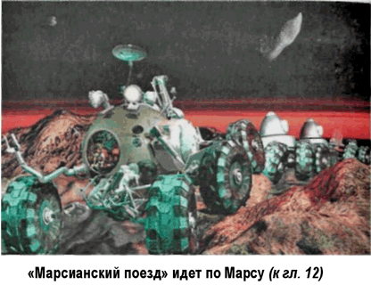
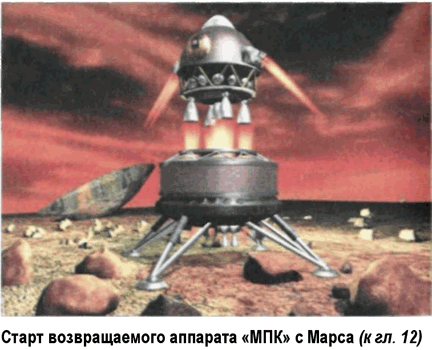

Альтернатива-6: Союз межпланетных социалистических республик
Однажды, в начале 80-х, у вице-президента Федерации космонавтики Бориса Николаевича Чугунова спросили, можно ли уже сейчас отправить экспедицию на Марс и возьмется ли за это СССР. Борис Николаевич тяжко вздохнул и ответил так: «Можно. Только хлеб опять на две копейки подорожает».
Этот исторический анекдот в точности отражает тогдашнее отношение специалистов к вопросу об экспедиции на Марс. В Советском Союзе учились считать деньги; народ устал от мобилизаций и авралов — большинству населения хотелось просто жить и получать от этого удовольствие, а не участвовать в очередной гонке под невнятными лозунгами.
Марс, в конце концов, никуда не денется, а социальные проблемы нужно решать прямо сейчас.
Однако в той реальности, возможность возникновения которой мы обсуждали в Альтернативе-5, все было бы по-другому.
Высадка на Луну и возведение на ней долгосрочной базы должны были преследовать некую цель, которую следовало обозначить. Такой целью естественным образом становился Марс. Тем более что при наличии тяжелых ракет-носителей, достаточное количество которых было построено еще в ходе битвы за Луну, проект пилотируемой экспедиции к Марсу становился вполне осуществимым.
Полагаю, что особой спешки при ее подготовке не было бы. Америка признала свое поражение на фронте освоения космоса и отступила. НАСА расформировано, штат его специалистов перешел в подчинение министерству обороны — теперь только это ведомство занимается космическими запусками; круг решаемых запусками задач чрезвычайно ограничен: ракеты выводят на околоземную орбиту спутники связи и разведки — на большее у американских военных не хватает решимости. Дело в том, что Советский Союз по дипломатическим каналам сделал недвусмысленное предупреждение: любые космические системы, которые заподозрят в том, что они несут на себе оружие массового поражения, будут немедленно уничтожены. И это не пустая угроза.
Тем временем Америку сотрясают социальные катаклизмы, связанные с двумя крупнейшими провалами: крахом лунной программы и бесславной затянувшейся войной во Вьетнаме. Все громче раздаются голоса «левых», призывающих к тому, чтобы западные страны брали пример с СССР в плане построения экономики, развития образования и культуры.
А тут еще случается Уотергейтский скандал, который приводит к импичменту президента. А тут еще индейцы сиу захватили поселок в резервации Пайн-Ридж и потребовали пересмотра договоров, заключенных правительством США с индейцами. А тут еще финансовый кризис, вызванный невиданным скачком цен на нефть… Все это случилось в 1973 году в нашей реальности, но не исключено, что то же самое могло бы произойти и в придуманном нами мире, где «русские первыми высадились на Луну».
А 1973 год, между прочим, одна из тех дат, когда «открывается» так называемое «астрономическое окно» — наиболее благоприятный период для полета к Марсу. И советские конструкторы не упускают возможности, чтобы отправить к красной планете сразу два корабля типа «ТМК-Э».
Через три года советские космонавты, водрузив алый флаг на поверхности Марса и объявив его частью территории СССР, вернутся на Землю, но это будет уже совсем другая Земля…
Война революций прокатится по миру: где-то коммунисты придут к власти путем демократических выборов, где-то путем кровавого переворота, но несомненно одно — Союз Советских Социалистических Республик, уже включивший в свой состав ряд Луну и Марс, будет расширяться и дальше, фактически оставшись единственной сверхдержавой планеты.
Разумеется, когда-нибудь рухнет и он, но еще долгие десятилетия над Землей (и над Солнечной системой) будет развиваться алый стяг победившего пролетариата.




